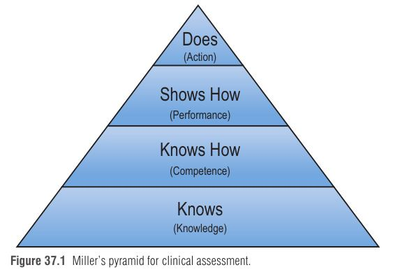

ההכשרה בכירורגיה פלסטית השתנתה לאורך 100 שנה: מחניכות (apprenticeship) אצל מנתחים בודדים, דרך תוכניות התמחות מבוססות-זמן, ועד למעבר ההדרגתי להכשרה מבוססת-כשירות (competency-based), סימולציה ומשוב משמעותי. הפרק סוקר את תיאוריות הלמידה שעיצבו את החינוך הרפואי הבתר-תואר, את ההיסטוריה של ההתמחות בארה"ב, ואת הכלים המודרניים: Milestones, EPAs ו-CBME. נקודה חשובה: עדיין אין ראיות שהשיטות החדשות עדיפות – וגם אין ראיות שהישנות היו עדיפות; לכן נדרשת גם הערכה של התוכניות עצמן (programmatic evaluation) ולא רק של המתמחים.
תיאוריית למידה ← הגדרת יעדים שאפשר לצפות בהם ולמדוד אותם ← שיטות הערכה שמתאימות לרמה הנבדקת ← משוב ← מנתח כשיר ולומד לכל החיים.
ארבע התיאוריות המשפיעות ביותר: אנדרגוגיה (למידת מבוגרים), הטקסונומיה של Bloom, הפירמידה של Miller ומודל Dreyfus. מהן נגזרו ה-Milestones, ה-EPAs ושיטות ההערכה החדשות. הפרק מסייג: תיאוריות מוחלפות לעיתים בתיאוריות עדכניות ורלוונטיות יותר ככל שהמחקר מתקדם.
אנדרגוגיה היא השיטה והפרקטיקה של הוראת מבוגרים, מתוך מחקר שהראה שמבוגרים לומדים אחרת מילדים. Knowles תיאר שישה עקרונות:
| # | עיקרון | משמעות מעשית בהוראת מתמחה |
|---|---|---|
| 1 | הצורך לדעת "למה" (need to know) | להסביר למה הנושא חשוב ואיך הוא יועיל לו |
| 2 | תפיסה עצמית של לומד (self-concept) | אחריות על ההחלטות, הכוונה עצמית ושליטה בלמידה |
| 3 | ניסיון קודם (experience) | לכבד את הניסיון ולקשור את החומר החדש למה שכבר למד או חווה |
| 4 | מוכנות ללמוד (readiness) | החומר רלוונטי ופותר בעיה מיידית – המוטיבציה עולה כשיש סיבה מיידית |
| 5 | אוריינטציה לבעיה (problem-oriented) | לומדים טוב יותר כשהחומר עוזר לבעיה שמתמודדים איתה עכשיו |
| 6 | מוטיבציה פנימית (internal motivation) | מוטיבציה חיצונית עוזרת, אבל מבוגרים משגשגים כשהם לומדים כי הם רוצים |
ששת העקרונות חיוניים לתכנון תוכנית לימודים – גם דידקטית (הרצאות) וגם בעבודה עצמה (on-the-job).
סיווג של כישורים קוגניטיביים. במקום רשימת ידע, יעדי הלמידה מנוסחים כפעלים ("לזכור", "להבין", "להעריך", "לבצע") – כי פעולה אפשר לצפות בה ולכן למדוד אותה. מסדר נמוך (זכירה – למשל, ההבדל בין שתל לבין מתלה, graft לעומת flap) לסדר גבוה (הבנה, יישום, ניתוח – למשל, איזה מהשניים מתאים להתוויה קלינית מסוימת).
Miller בנה על Bloom פירמידה ייעודית להערכה קלינית, המתארת את ההתפתחות המקווה של המתמחה. הבעיה המרכזית: רוב שיטות ההערכה הקיימות בודקות רק ידע ולא יכולת.
הערכה במקום העבודה (workplace-based assessment) נעשית בזמן שהמתמחה מבצע בפועל את תפקידו כרופא, ולכן היא הייצוג הטוב ביותר של ביצועיו ושל כשירותו. הכלים עדיין בשכלול (למשל אפליקציות סמארטפון כמו SIMPL).

האחים Dreyfus תיארו חמש רמות שהלומד מתקדם דרכן:
הכירורגיה הפלסטית צמחה ממקורות רבים, בעיקר מתוך הצורך לטפל בנפגעי מלחמות העולם. המייסדים היו בעיקר מנתחי פה; מאוחר יותר הצטרפו אורתופדים, רופאי א.א.ג ורופאי עיניים – למעטים הייתה הכשרה בכירורגיה כללית. ההכשרה הייתה בעיקר חניכות, עם מעט preceptorships בבתי חולים ידועים (St. Louis, Baltimore, New York, Boston, London).
| שנה | אירוע |
|---|---|
| 1921 | נוסדה American Association of Oral Surgeons ← American Association of Oral and Plastic Surgeons ← AAPS (American Association of Plastic Surgeons) ב-1942 |
| 1931 | נוסדה בנפרד American Society of Plastic and Reconstructive Surgeons ← כיום ASPS |
| דצמבר 1937 | ה-American Board of Surgery מכיר בכירורגיה פלסטית כתת-התמחות כירורגית |
| פברואר 1941 | ה-ABPS (American Board of Plastic Surgery) מוכר כהתמחות עצמאית ע"י ה-ABMS של ה-AMA. "Founders Group" – המוסמכים הראשונים, בקריטריונים עמומים ("מוניטין בקהילה... ושום דבר רע רציני אינו ידוע עליו") |
| בתחילה | דרישה ל-5 שנים: שנת אינטרנשיפ + 2 כירורגיה כללית + 2 כירורגיה פלסטית; החלטות ה-ABPS לעיתים שרירותיות |
| 1953 | ה-ABPS מצטרף ל-Residency Review Board של ה-AMA (אישור בתי חולים להתמחות) |
| 1960 | הדרישה עולה ל-3 שנות כירורגיה כללית |
| 1972 | זכאות גם לבוגרי נוירוכירורגיה, מיילדות-גינקולוגיה, אורתופדיה, א.א.ג, כירורגיה כללית, חזה ואורולוגיה + 2 שנות פלסטיקה |
| 1981/1982 | הקמת ה-ACGME, המפקח על ועדות ה-RRC (Residency Review Committees). הרקע: Medicare הקים מימון ציבורי לחינוך רפואי |
| תחילת שנות ה-90 | ה-ABPS מאשר מסלולים משולבים (combined/coordinated), אך ה-RRC פיקח רק על שנתיים אחרונות |
| 1995 | נוצר המסלול המשולב (integrated) – קבלה ישירות מבית הספר לרפואה, וכל ההכשרה בפיקוח ה-RRC ומנהל תוכנית פלסטיקה |
| 1999 | ה-ACGME מגדיר את 6 הכשירויות המרכזיות |
| 2003 | הגבלת שעות עבודה (duty hours) |
| 2005 | ABPS, RRC ו-AACPS (כיום ACAPS): בשני המסלולים לפחות 3 שנות כירורגיה פלסטית |
| 2009 / 2013 / 2014 | פיתוח ה-NAS (Next Accreditation System) ← שלב ראשון ביולי 2013 בשבע התמחויות ← Milestones בפלסטיקה מיולי 2014 |
| מסלול משולב (Integrated) | מסלול עצמאי (Independent) | |
|---|---|---|
| מספר תוכניות (דצמבר 2021) | 84 | 50 |
| "ניסיון בכירורגיה פלסטית" | 72 חודשים (6 שנים) | 36 חודשים (3 שנים) |
| קבלה | ישירות מבית הספר לרפואה | אחרי התמחות קודמת: כירורגיה כללית, נוירוכירורגיה, אורתופדיה, א.א.ג, חזה, אורולוגיה, כלי דם, או כירורגיית פה ולסת (עם לפחות 2 שנות כירורגיה כללית) |
| ליבה כירורגית | כשירות בתחומים: מערכת עיכול, בטן, שד (אונקולוגי ואסתטי), רפואה דחופה, כירורגיית ילדים, טיפול נמרץ כירורגי, אונקולוגיה כירורגית (לא שד), השתלות, טראומה וכלי דם. 20 מקרים מכל אחד משלושה תחומים: עיכול/בטן, שד ואונקולוגיה, טראומה/טיפול נמרץ/הרדמה | הושלמה במסגרת ההתמחות הקודמת |
| מקרי פלסטיקה | אותו מספר מקרים נדרש בשני המסלולים במהלך שנות הפלסטיקה (לפי אתר ה-ACGME) | |
הבעיה: קשה היה להעריך אותן באופן עקבי ← ב-2009 פותח ה-NAS, שכלל שני מרכיבים:
Milestones: הערכה פעמיים בשנה ← רמות 1 עד 5 (לפי Dreyfus) ← רמה 4 = יעד הסיום, אך לא דרישת חובה ← המתמחה מבצע גם הערכה עצמית (מודעות עצמית ורפלקציה).
רמה 1 = "מדגים את מה שמצופה ממתמחה נכנס". רמה 5 = "התקדם מעבר ליעדי ההתמחות, יעדים שאפתניים של מי שכבר כמה שנים בפרקטיקה".
אתגרים: חוסר הנחיה ליישום; חוסר בהכשרת סגל (faculty development); איסוף הערכות במקום העבודה מכביד וגוזל זמן; קשה להראות שהיישום הוביל לרופאים בטוחים או מוכשרים יותר. יתרון: מיקוד בלמידה ממוקדת-לומד, והחלטה על מוכנות לפרקטיקה עצמאית על בסיס נתונים במקום "תחושת בטן" (gestalt).
| Milestones | EPAs | |
|---|---|---|
| מה מתארים | את האדם – תיאור נרטיבי של התנהגויות בדרך מטירון למומחה | את העבודה – פעילות חיונית שמפקידים בידי רופא כשיר |
| מהות | למעשה תת-כשירויות (subcompetencies) | משימות קונקרטיות, נצפות ומדידות – "אבני הבניין" של מנתח כשיר |
| ספציפיות | ספציפיות להתמחות (הכשירויות של ה-ACGME – לכל הרופאים) | פעילויות שגרתיות וחשובות בתוך ההתמחות |
| הערכה | קשה יותר | קלה יותר; מסונכרנת עם העבודה היומיומית; ברמה הגבוהה ביותר של Miller ("Does") |
מבוסס-זמן: 6 שנים (משולב) או 3 (עצמאי) + מספר מקרים + רמה 4 ב-Milestones + אישור מנהל התוכנית ← "מוכן לפרקטיקה עצמאית".
מבוסס-כשירות: המתמחה מסיים כאשר הוכרז כשיר ע"י מנהל התוכנית והתוכנית – ללא קשר לזמן ששהה בהכשרה.
ההשראה: הכשרת טייסים (תעופה). החשש: המודל מבוסס-הזמן אינו משקף בהכרח את הכשירות או ה"מוכנות" האמיתית.
רוב התוכניות (כולל רוב תוכניות הפלסטיקה) עדיין מבוססות-זמן. ארבע תוכניות פלסטיקה מבוססות-כשירות: University of Pittsburgh, University of Michigan, Johns Hopkins, Baylor Scott and White. ייתכן שבעתיד ה-ACGME יחייב זאת, כמו ה-Royal College בקנדה.
| בעד CBRE (5 טיעונים) | נגד CBRE |
|---|---|
|
1. מבטיח שמסיימים מנתחים כשירים המוכנים לעבודה עצמאית 2. ציפיות למידה ברורות 3. תוכנית מותאמת אישית ללומד 4. מיקוד בשליטה (mastery) 5. יותר הערכה ← יותר משוב, זיהוי תחומים לשיפור + זיהוי מוקדם של מי שזקוק לתגבור (remediation), מניעת פערי ידע |
• אובדן מבנה הצוות ולכידות התוכנית • תחרות על מקרים ו"אגירת מקרים" (case-hoarding) • אי-ודאות בתעסוקה, בפלואושיפ ובתכנון המשפחתי • עומס רב על הסגל בהפקת הערכות לכל מתמחה |
למה סימולציה? הוכחת כשירות בחלקי ניתוח (מתאים ל-CBME) ← חשיפה נוספת למרות הגבלת שעות העבודה ← התנסות בפרוצדורות וטכנולוגיות נדירות ← דרך "בסיכון נמוך" (low-stakes) להראות כשירות ואוטונומיה לפני חדר הניתוח.
תחומים שצומחים במהירות וצריכים להיכנס להכשרה: לימפאדמה, ניתוחי התאמה מגדרית וכירורגיה של עצבים היקפיים. ומעל הכל: פיתוח לומדים לכל החיים (lifelong learners) ו"חשיבת צמיחה" (growth mindset) צריך להיות יעד של כל תוכנית התמחות.
כל קומה – כלי הערכה: K = בחינה כתובה; KH = בחינה בעל פה (mock orals); SH = סימולציה/OSCE; D = הערכה במקום העבודה / EPA.
Novice ← Advanced beginner ← Competent ← Proficient ← Expert = Milestones רמות 1-5; רמה 4 = יעד הסיום.
למה (need to know) · אני מחליט (self-concept) · ניסיון קודם · עכשיו רלוונטי (readiness) · בעיה (problem-oriented) · בפנים (internal motivation).
Milestones = Me (תיאור האדם); EPAs = Employment (תיאור העבודה).
84 תוכניות משולבות / 50 עצמאיות; 72 חודשים / 36 חודשים. וקו הזמן: 21 (אגודה) – 37 (תת-התמחות) – 41 (בורד עצמאי) – 95 (משולב) – 99 (6 כשירויות) – 03 (שעות) – 14 (Milestones).
דמייני טייסת צעירה (CBME נולד מהתעופה) שנכנסת לבית ספר לטיסה בצורת פירמידה. בקומת הקרקע היא יודעת את הספר (בחינה כתובה), בקומה השנייה היא מסבירה למדריך איך נוחתים (בעל פה), בשלישית היא מדגימה בסימולטור – שבו, מסתבר, מתאמנים על כנפי עוף – ורק בפסגה היא עושה: טסה באמת, והמדריך "מפקיד" בידיה את ההגאים (EPA). על הקיר תלויות חמש דרגות כנפיים: טירון, מתחיל, כשיר, מיומן, מומחה – וכדי לסיים צריך את הרביעית. בקנדה אין שעון על הקיר: מסיימים כשמוכנים, לא כשנגמר הזמן.
את מנהלת תוכנית התמחות משולבת בכירורגיה פלסטית. מתמחה בשנה 3 קיבל ציוני in-service גבוהים מאוד, אבל מדריכים מדווחים שבחדר הניתוח הוא מתקשה בתכנון מתלה מקומי ובקבלת החלטות תוך-ניתוחיות. ה-CCC מתכנס להערכת ה-Milestones החצי-שנתית. מתמחה אחר, בשנה 6, הגיע לרמה 3 בלבד בחלק מה-Milestones, אך השלים את כל מספרי המקרים. בנוסף, התוכנית שוקלת לעבור למודל מבוסס-כשירות ולהקים מעבדת סימולציה.